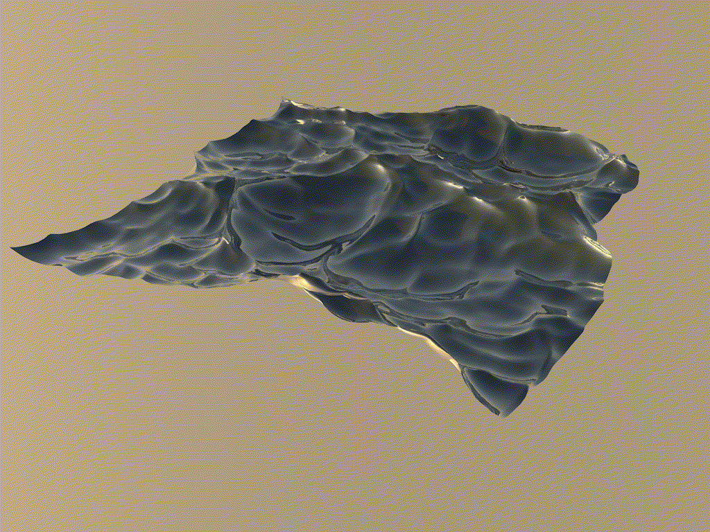

3D Design
The sections featured on this page are taken from various projects I have done. They are mostly created in MAXON Cinema4D.
Walk Cycles
This is a project in which I developed some walk cycles for cube with limbs. Click or tap to change walking style.
See projectRealistic Water

This is a project in which I modelled and textured some realistic water. Mouseover to see it move.
See project